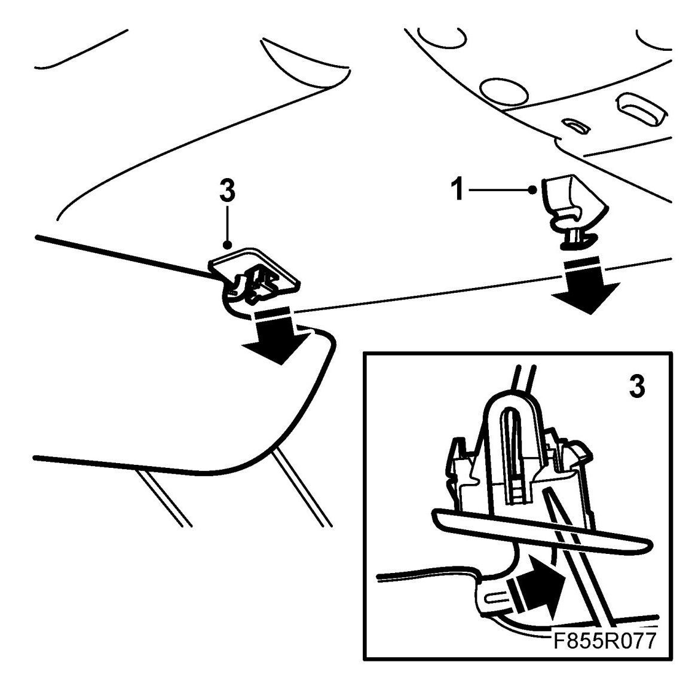
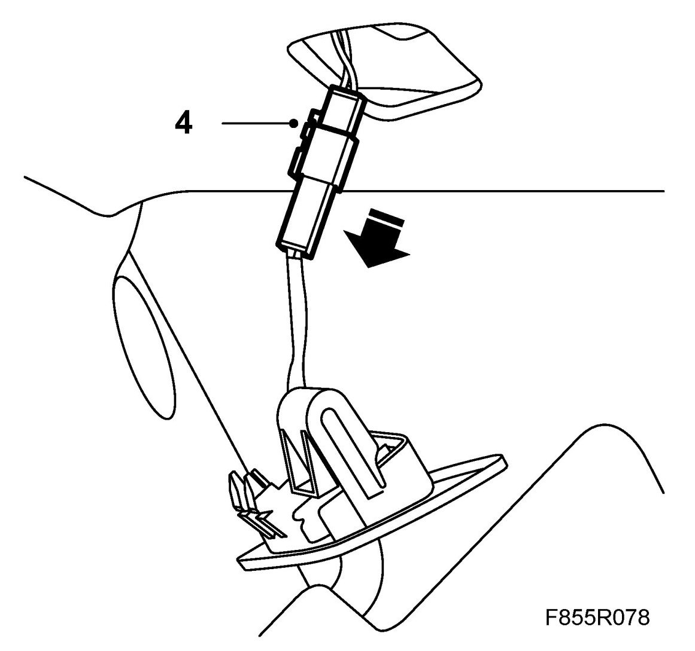
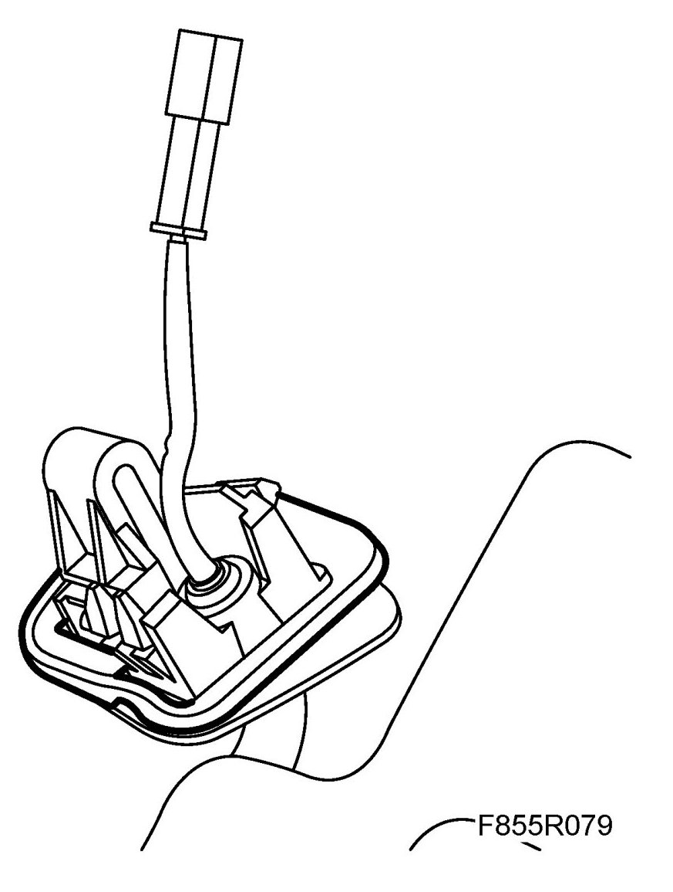
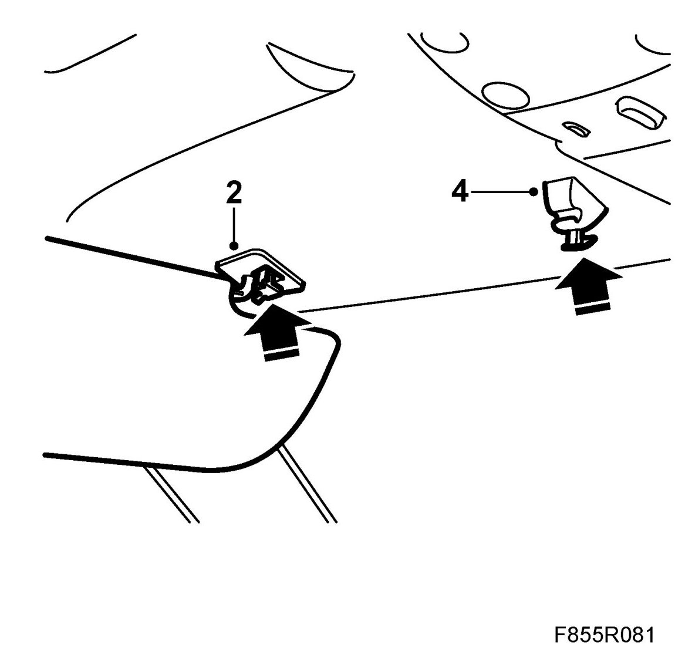

Sun Visor
Sun Visor
To remove
1. Remove the inner mounting of the sun visor by moving the front edge of the mounting backwards and downwards.

2. Twist the sun visor backwards.
3. Remove the protective cover and press the locking tab backwards with a screwdriver whilst pulling the mounting downwards.
4. Unplug the visor connector.

where appropriate: Before mounting the sun visor the protective plastic must be removed.

To fit
1. Plug in the visor connector.
2. NOTE: Be careful not to pinch the cable to the lighting for the vanity mirror.
Fit the outer mounting of the sun visor. Ensure that the locking tab engages properly.

3. Twist the sun visor forward.
4. Manoeuvre in the inner edge of the visor and press the visor into its mounting.